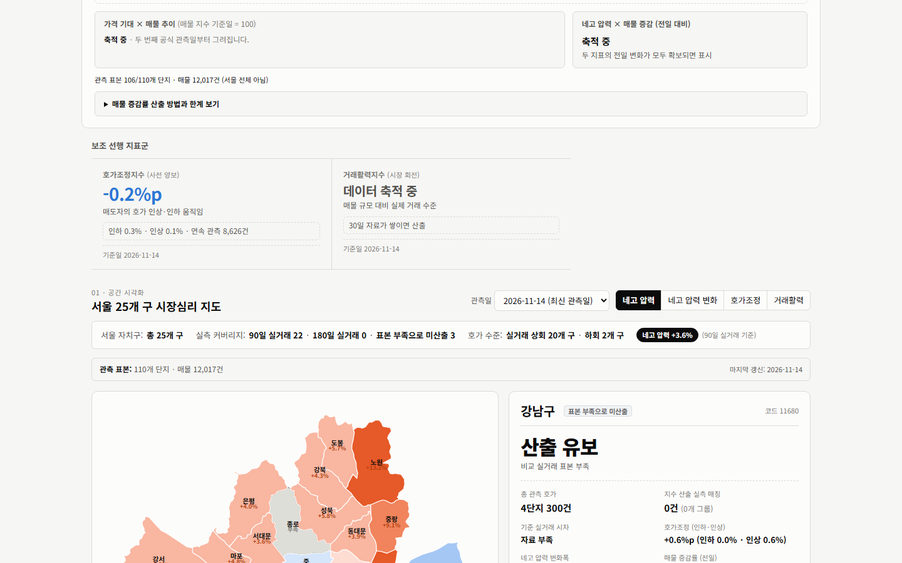
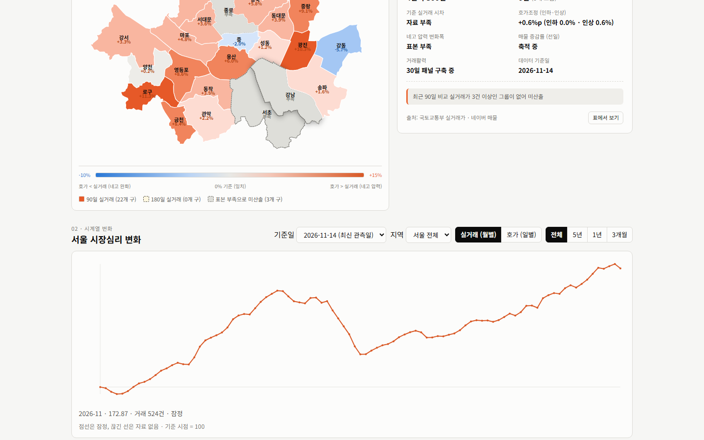
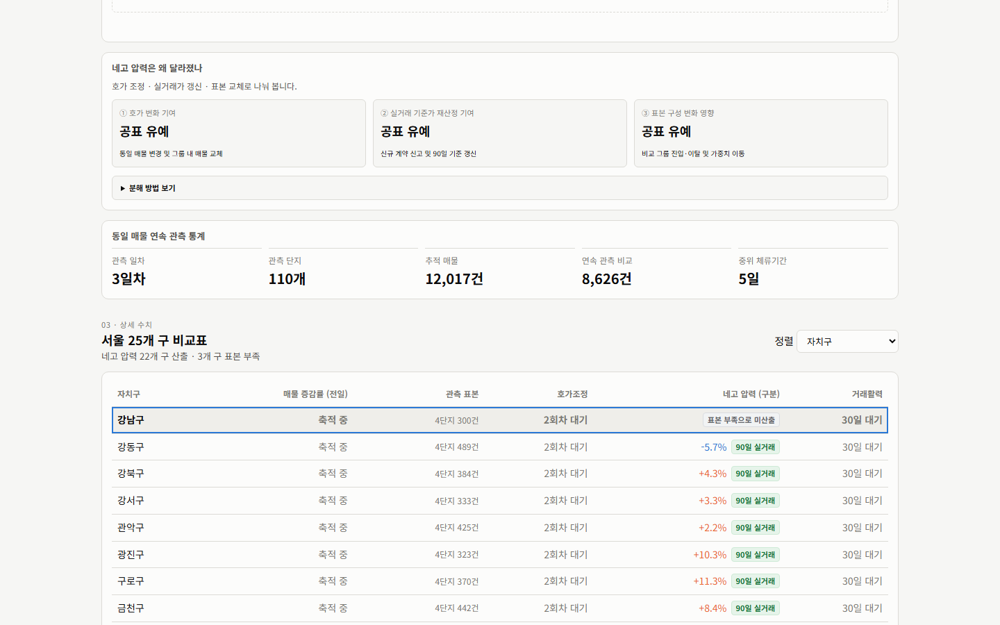

이런 서비스입니다
아파트 가격 뉴스는 실거래가에서 출발합니다. 그런데 실거래가는 이미 지난 계약의 기록입니다. 지금 집주인들이 얼마를 부르고 있고, 그 호가가 실제 거래된 값보다 얼마나 높은지는 실거래가만으로는 알 수 없습니다.
APT워치는 이 간격을 숫자로 만듭니다. 같은 단지, 같은 전용면적, 같은 층 구간을 하나의 비교 그룹으로 묶고, 그 그룹의 현재 호가 중위값을 최근 90일 실거래 중위값과 비교합니다. 호가가 높을수록 집주인이 가격을 버티고 있다는 뜻이고, 그 격차가 줄면 네고, 곧 협상 여지가 커진 것으로 읽습니다. 서울 전체와 25개 구의 값을 지도에 칠합니다.
숫자가 흔들릴 수 있는 지점마다 안전장치를 뒀습니다. 수집한 단지의 품질을 하나씩 검증하고, 110개 단지 중 105개 이상이 통과한 날에만 공식 지수를 공표하며, 표본이 부족한 구는 0이나 서울 평균으로 채우지 않고 미산출로 둡니다. 비교할 관측일이 아직 쌓이지 않은 변화는 변화율을 0으로 두지 않고 축적 중이라고 씁니다.
호가는 매도 희망가이며 실제 협상 결과가 아닙니다. 110개 단지 표본은 서울 전체 재고를 대표하도록 가중하지 않았습니다.
무엇을 볼 수 있는가
호가 중위값 ÷ 최근 90일 실거래 중위값 − 1을 %로 보여 줍니다. 전일, 7일, 28일 변화를 따로 보여 주고, 비교할 관측일이 쌓이기 전에는 "축적 중"으로 표시합니다. 산출 공식과 방법은 접어 둔 설명에 있습니다.
같은 표본 단지의 매도 매물이 얼마나 늘고 줄었는지를 봅니다. 두 날짜 모두 품질 검증을 통과한 단지만 비교하고 매물 ID 중복을 제거하며, 신규와 관측 종료는 ID만 바뀐 경우를 빼고 순수치만 표시합니다. 관측 종료는 거래 완료가 아닙니다.
호가조정지수는 같은 매물이 연속 관측될 때 가격을 올렸는지 내렸는지를 추적하고, 거래활력지수는 매물 규모 대비 실제 계약 수준을 봅니다. 가격 기대와 매물 추이를 겹쳐 보는 그래프, 두 지표의 전일 변화를 네 가지 조합으로 기록하는 칸도 있습니다.
네고 압력, 네고 압력 변화, 호가조정, 거래활력 중 하나를 골라 구별로 칠하고, 구를 누르면 관측 단지 수와 매물 수, 90일·180일 실거래 커버리지를 봅니다. 관측일을 바꿔 가며 비교할 수 있습니다.
실거래가격지수(월별)와 호가(일별) 시계열을 전체, 5년, 1년, 3개월로 봅니다. 네고 압력이 왜 달라졌는지를 호가 변화 기여, 실거래 기준가 재산정 기여, 표본 구성 변화 세 가지로 나눠 보여 주는 분해도 있습니다.
구별 네고 압력, 매물 증감률, 호가조정, 거래활력, 관측 표본(단지 수와 매물 수)을 표로 정렬해 봅니다. 행을 누르면 지도에서 그 구가 선택됩니다.
화면 미리보기
메인 — 네고 압력과 매물 증감률

지도 — 25개 구 시장심리

시계열 — 서울 시장심리 변화

비교표 — 구별 수치 정렬
데이터와 산출 방법
현재 화면 기준 NEGO INDEX는 +3.6%(비교 그룹 70개, 2026-11-14 자료)이고 네고 압력은 22개 구에서 산출, 종로·서초·강남 3개 구는 표본 부족으로 미산출입니다. 실거래가격지수(월별)는 별도의 고정효과 모형 지수로 NEGO INDEX 계산에는 쓰지 않으며, 기초자료는 2,375개 구·월 원자료 451,053건(분석 대상 433,330건)입니다.
알 수 없는 것들
호가는 매도 희망가여서 실제 협상 결과와 다를 수 있습니다. 110개 단지 표본은 서울 전체 재고를 대표하도록 가중하지 않았고, 비교 그룹은 최근 실거래가 있는 일부 단지·평형에 몰려 있으며 상당수 그룹이 실거래 3~4건에 기대고 있습니다. 그래서 그룹이 적은 자치구 값과 하루 단위 변화는 참고 수준으로 봐야 합니다.
관측 시각이 날마다 달라지면 같은 날 06시와 09시 관측만으로도 매물이 수 % 달라질 수 있습니다. 이 때문에 정규 수집이 아닌 관측은 공식 증감률에서 빼고 참고로만 보여 줍니다. 네고 압력과 매물 증감의 조합은 기록일 뿐 집값 방향을 알려 주는 신호로 검증된 것이 아닙니다.
투자 조언이 아닙니다. 수치는 계속 갱신되며, 인용하기 전에 국토교통부 실거래가 원자료를 확인해 주세요.
기술 및 제작 방식
개발 현황
실거래 갱신 2026-11-14 07:00 KST. 2026-11-14를 첫 공식 기준선으로 삼아 일간·7일·28일 변화를 쌓는 중이고, 첫 정규 매물 증감률은 06시 정규 수집이 이틀 연속 정상일 때부터 공표합니다.